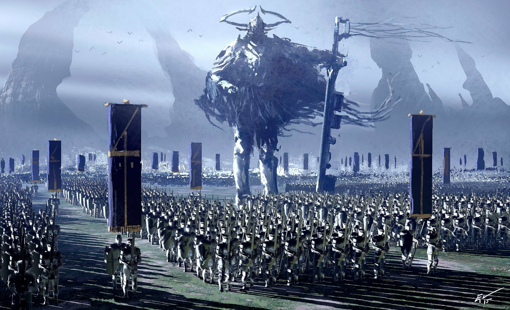
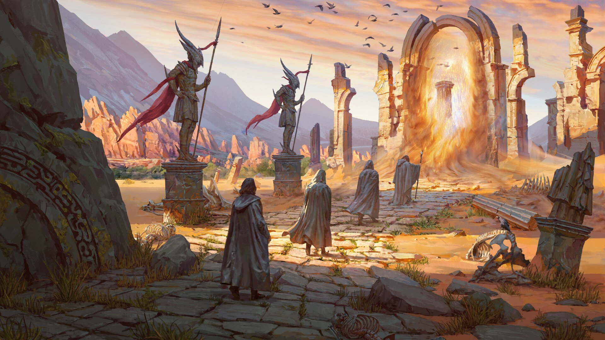
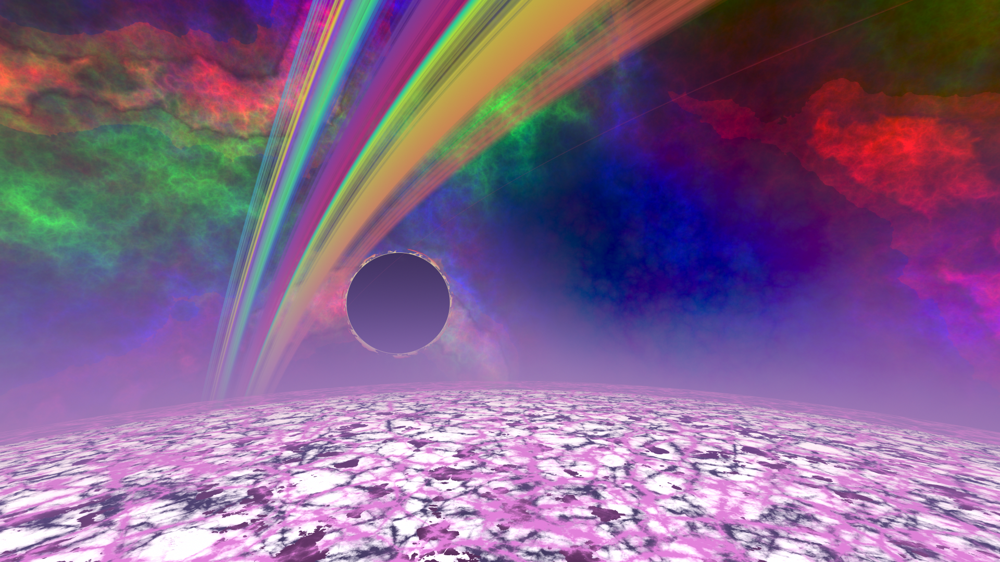

Cronicas del Bastion
Cronicas del Bastion
1 de Marzo, Año 314 - El Primer Ritual de Invocación
El Jardín de Balamb comenzó su primera ceremonia oficial de invocación, donde los estudiantes novatos, guiados por el Maestro Elion, convocaron a su primer espíritu guardián: Zetharion, el Dragón de la Niebla. Aunque la invocación fue un éxito, el joven aprendiz Aric casi se vio tragado por una ráfaga de viento sobrenatural. Sin embargo, gracias al coraje de todos, Zetharion aceptó su llamado, marcando el comienzo de una nueva era para el Jardín.

17 de Octubre, Año 316 - La Gran Tormenta de Magia
En un intento por reforzar la barrera mágica que protege el Jardín, los maestros de conjuración llevaron a cabo un hechizo de amplificación. La magia desbordó los límites del control y una tormenta de energía pura azotó el Jardín por tres días y tres noches. Durante ese tiempo, se presenció una lluvia de estrellas fugaces que, según algunos, contenían los espíritus de antiguos héroes. Nadie salió ileso, pero la tormenta dejó a muchos con nuevas habilidades y un entendimiento más profundo de la magia desbordante.

8 de Enero, Año 322 - La Batalla de las Espadas Gemelas
La batalla más épica entre las casas de Los Defensores del Fuego y Los Custodios de la Luna tuvo lugar en los campos cercanos al Jardín. Durante la contienda, los estudiantes lucharon con espadas imbuidas con magia ancestral. Las espadas gemelas, Vulneris y Lunaris, brillaron con un poder sin igual, y aunque la batalla terminó sin vencedores claros, todos los combatientes fueron consagrados como verdaderos héroes.
21 de Abril, Año 327 - La Apertura del Portal del Olvido
Un evento que cambió el curso de la historia del Jardín. El profesor Astrid Vellor y su equipo de invocadores lograron abrir el Portal del Olvido, una brecha entre mundos. Por un breve momento, criaturas y hechizos de otros reinos cruzaron al Jardín. Fue un caos, pero también una oportunidad para que los estudiantes aprendieran el verdadero significado del equilibrio mágico. Aquellos que sobrevivieron a la travesía, jamás olvidaron lo que vieron al otro lado del portal.
15 de Septiembre, Año 332 - La Primera Celebración del Eclipse Lunar
Cada año, durante el Eclipse Lunar, los estudiantes del Jardín celebran el renacimiento de la magia en una ceremonia secreta. En este evento, los más poderosos hechiceros invocan la energía del eclipse para renovar sus fuerzas y transmitir sus conocimientos a las nuevas generaciones. La primera celebración fue un evento marcado por las estrellas, donde se conjuraron ilusiones impresionantes y los cielos se llenaron de colores jamás vistos. Aquel día, el Jardín fue testigo de la unión perfecta entre la magia y la naturaleza.
